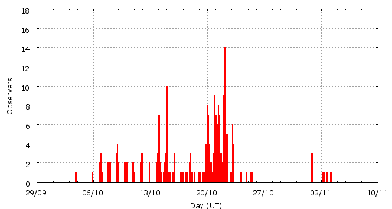

Activity profile
Activity profileThis page shows automated results of the Orionids 2007, based on visual data entered through the IMO electronic report form. Send your feedback regarding this page to Geert Barentsen or visit the project pages. Note that automated results are not suitable for scientific use!
Page generated on 23 December 2007 at 15:06 UT.
ZHRmax = 70 based on 4791 Orionids in 555 data intervals, assuming fixed population index r = 2.0 and zenith correction 1/sin(hR).

| Time (UT) | Solarlon | nINT | nORI | ZHR | |
|---|---|---|---|---|---|
| 2007-10-06 23:00 | 193.204 | 1 | 1 | 8 | +-6 |
| 2007-10-06 23:50 | 193.239 | 4 | 4 | 4 | +-2 |
| 2007-10-08 11:23 | 194.701 | 8 | 9 | 4 | +-1 |
| 2007-10-09 06:11 | 195.474 | 8 | 11 | 4 | +-1 |
| 2007-10-10 06:25 | 196.472 | 8 | 13 | 4 | +-1 |
| 2007-10-11 18:29 | 197.958 | 5 | 11 | 6 | +-2 |
| 2007-10-12 01:30 | 198.247 | 3 | 13 | 9 | +-2 |
| 2007-10-14 01:34 | 200.230 | 36 | 75 | 5 | +-1 |
| 2007-10-15 01:05 | 201.201 | 44 | 88 | 5 | +-1 |
| 2007-10-15 23:03 | 202.108 | 5 | 16 | 8 | +-2 |
| 2007-10-17 01:35 | 203.204 | 7 | 30 | 8 | +-1 |
| 2007-10-18 00:49 | 204.165 | 6 | 26 | 10 | +-2 |
| 2007-10-19 04:16 | 205.301 | 7 | 56 | 19 | +-3 |
| 2007-10-20 00:26 | 206.135 | 23 | 132 | 20 | +-2 |
| 2007-10-20 02:53 | 206.236 | 33 | 265 | 23 | +-1 |
| 2007-10-20 15:10 | 206.745 | 18 | 126 | 22 | +-2 |
| 2007-10-20 22:57 | 207.067 | 18 | 129 | 40 | +-4 |
| 2007-10-21 01:52 | 207.188 | 15 | 260 | 44 | +-3 |
| 2007-10-21 04:03 | 207.279 | 21 | 196 | 39 | +-3 |
| 2007-10-21 07:10 | 207.408 | 17 | 180 | 51 | +-4 |
| 2007-10-21 09:17 | 207.495 | 18 | 272 | 44 | +-3 |
| 2007-10-21 12:08 | 207.613 | 26 | 231 | 34 | +-2 |
| 2007-10-21 16:27 | 207.792 | 12 | 122 | 51 | +-5 |
| 2007-10-22 00:28 | 208.124 | 40 | 460 | 70 | +-3 |
| 2007-10-22 02:49 | 208.222 | 65 | 838 | 57 | +-2 |
| 2007-10-22 04:44 | 208.301 | 20 | 225 | 68 | +-5 |
| 2007-10-22 08:05 | 208.440 | 26 | 370 | 66 | +-3 |
| 2007-10-22 10:01 | 208.520 | 16 | 256 | 52 | +-3 |
| 2007-10-23 02:04 | 209.185 | 9 | 122 | 41 | +-4 |
| 2007-10-23 03:32 | 209.246 | 20 | 185 | 32 | +-2 |
| 2007-10-24 07:18 | 210.397 | 5 | 57 | 36 | +-5 |
| 2007-11-01 21:00 | 218.950 | 1 | 1 | 8 | +-6 |
| 2007-11-01 22:07 | 218.997 | 8 | 10 | 4 | +-1 |
| 2007-11-03 07:23 | 220.384 | 2 | 1 | 3 | +-2 |
For each estimation interval: time is the middle of the interval, nINT is the number of observing periods and nORI is the number of Orionids involved. ZHR = (1 + sum nORI) / sum(Teff/C) where Teff is the effective observing time and C is the total correction for limiting magnitude, clouds and zenith correction. The solar longitudes refer to equinox J2000.0.
ZHRmax = 79 based on 4478 Orionids in 408 data intervals, assuming fixed population index r = 2.0 and zenith correction 1/sin(hR).

| Time (UT) | Solarlon | nINT | nORI | ZHR | |
|---|---|---|---|---|---|
| 2007-10-19 05:02 | 205.332 | 6 | 52 | 21 | +-3 |
| 2007-10-20 00:38 | 206.143 | 27 | 167 | 21 | +-2 |
| 2007-10-20 02:47 | 206.232 | 22 | 181 | 21 | +-2 |
| 2007-10-20 07:11 | 206.414 | 16 | 132 | 22 | +-2 |
| 2007-10-20 22:09 | 207.034 | 27 | 172 | 35 | +-3 |
| 2007-10-21 01:25 | 207.169 | 9 | 162 | 43 | +-3 |
| 2007-10-21 02:53 | 207.230 | 11 | 161 | 47 | +-4 |
| 2007-10-21 04:40 | 207.304 | 20 | 180 | 39 | +-3 |
| 2007-10-21 07:37 | 207.426 | 15 | 173 | 50 | +-4 |
| 2007-10-21 09:05 | 207.487 | 11 | 162 | 49 | +-4 |
| 2007-10-21 11:01 | 207.567 | 15 | 168 | 33 | +-3 |
| 2007-10-21 12:50 | 207.642 | 20 | 163 | 36 | +-3 |
| 2007-10-21 21:27 | 207.999 | 22 | 160 | 53 | +-4 |
| 2007-10-22 00:31 | 208.126 | 10 | 168 | 74 | +-6 |
| 2007-10-22 01:06 | 208.150 | 12 | 191 | 79 | +-6 |
| 2007-10-22 01:36 | 208.171 | 12 | 170 | 66 | +-5 |
| 2007-10-22 02:12 | 208.196 | 15 | 160 | 49 | +-4 |
| 2007-10-22 02:45 | 208.219 | 15 | 221 | 59 | +-4 |
| 2007-10-22 03:18 | 208.241 | 14 | 199 | 60 | +-4 |
| 2007-10-22 03:53 | 208.266 | 17 | 187 | 57 | +-4 |
| 2007-10-22 04:58 | 208.311 | 17 | 164 | 65 | +-5 |
| 2007-10-22 07:36 | 208.419 | 13 | 177 | 59 | +-4 |
| 2007-10-22 08:40 | 208.464 | 11 | 172 | 72 | +-5 |
| 2007-10-22 09:39 | 208.505 | 11 | 165 | 63 | +-5 |
| 2007-10-22 10:34 | 208.542 | 6 | 107 | 43 | +-4 |
| 2007-10-23 02:17 | 209.194 | 13 | 166 | 42 | +-3 |
| 2007-10-23 03:44 | 209.254 | 16 | 141 | 29 | +-2 |
| 2007-10-24 04:18 | 210.273 | 4 | 46 | 35 | +-5 |
| 2007-10-24 19:18 | 210.895 | 1 | 11 | 40 | +-12 |
For each estimation interval: time is the middle of the interval, nINT is the number of observing periods and nORI is the number of Orionids involved. ZHR = (1 + sum nORI) / sum(Teff/C) where Teff is the effective observing time and C is the total correction for limiting magnitude, clouds and zenith correction. The solar longitudes refer to equinox J2000.0.
Data has been received from 69 observers in 20 countries. Thank you for your efforts!

| Observer | Country | Teff | nORI |
|---|---|---|---|
| Salvador Aguirre | unknown | 12.60h | 232 |
| Salvador Aguirre | Mexico | 2.00h | 4 |
| Salvador Aguirre | Mexico | 2.50h | 3 |
| Felix Bettonvil | Netherlands | 3.03h | 134 |
| Jean Marie Biets | Belgium | 2.33h | 12 |
| Jean-marie Biets | Belgium | 6.75h | 54 |
| Dushyant Chauhan | India | 1.18h | 32 |
| Dushyant Chauhan | India | 1.18h | 32 |
| Neha Das | India | 0.96h | 5 |
| Namrata Date | India | 1.44h | 7 |
| Daniel Delaney | unknown | 1.00h | 9 |
| Peter Detterline | United States | 8.33h | 230 |
| Sietse Dijkstra | Netherlands | 19.12h | 274 |
| Irena Divisova | Czech Republic | 42.75h | 34 |
| Dariusz Dorosz | Poland | 1.33h | 62 |
| Audrius Dubietis | Lithuania | 1.00h | 3 |
| Frank Enzlein | Germany | 9.56h | 238 |
| Sylvie Gorkova | Czech Republic | 6.00h | 2 |
| Mitja Govedic | Slovenia | 0.85h | 26 |
| Wayne T. Hally | United States | 16.05h | 164 |
| Vilem Heblik | Czech Republic | 7.75h | 42 |
| Carl Hergenrother | United States | 5.46h | 67 |
| Carl Johannink | Netherlands | 11.63h | 221 |
| Kundan Kadam | India | 4.08h | 18 |
| Jay Kansara | India | 7.34h | 74 |
| Roy Keeris | Netherlands | 0.90h | 13 |
| Andre Knofel | Germany | 5.56h | 5 |
| Jakub Koukal | Czech Republic | 98.49h | 192 |
| Peter Kozich | unknown | 1.25h | 64 |
| Dovile Krauleidiene | Lithuania | 1.00h | 2 |
| Peter Van Leuteren | Netherlands | 6.00h | 153 |
| Adam Marsh | Australia | 2.00h | 37 |
| Pierre Martin | Canada | 5.84h | 311 |
| Antonio Martinez | Venezuela | 1.00h | 13 |
| Xiaoyun Ma | China | 2.08h | 26 |
| Bruce Mccurdy | Canada | 1.00h | 6 |
| Frederic Merlin | France | 1.75h | 29 |
| Vandeputte Michel | Belgium | 4.25h | 244 |
| Koen Miskotte | Netherlands | 20.45h | 378 |
| Sabine Wachter | Germany | 3.21h | 4 |
| David Moyer | unknown | 1.00h | 33 |
| Sven Nather | Germany | 22.50h | 81 |
| Tereza Novotna | Czech Republic | 1.50h | 22 |
| Daniel Van Os | Netherlands | 0.72h | 4 |
| Swapnil Pawar | India | 3.30h | 24 |
| Richard Pollard | Australia | 3.50h | 30 |
| Jurgen Rendtel | Germany | 20.50h | 250 |
| Mileny Roche Lamas | Cuba | 1.99h | 1 |
| Amanda Rowen | unknown | 1.00h | 11 |
| Tomoko Sato | Japan | 1.32h | 34 |
| Rene Scurbecq | Belgium | 3.23h | 89 |
| Ulrich Sperberg | Germany | 2.30h | 58 |
| Octaaf Steen | Belgium | 2.13h | 18 |
| Con Stoitsis | Australia | 3.88h | 6 |
| Wesley Stone | United States | 1.79h | 100 |
| Richard Taibi | United States | 1.16h | 16 |
| Rafael Ruben Torregrosa Soler | Spain | 1.08h | 3 |
| Blanca Troughton Luque | Spain | 2.33h | 20 |
| Shigeo Uchiyama | Japan | 3.40h | 20 |
| Devdatta Urankar | India | 1.50h | 13 |
| Simona Vaduvescu | Romania | 6.45h | 159 |
| Danny Vandeghinste | Belgium | 1.58h | 28 |
| Hendrik Vandenbruaene | Belgium | 1.66h | 15 |
| Michel Vandeputte | Belgium | 29.28h | 474 |
| William Watson | United States | 11.01h | 339 |
| Thomas Weiland | Austria | 4.90h | 65 |
| San Zhan | China | 1.18h | 33 |
| Jin Zhu | China | 1.38h | 40 |
| Jurga Zieniute | Lithuania | 1.00h | 4 |
Create your own analysis!
Rate intervals: ori2007_rate.csv (CSV-format).
Magnitude distributions: ori2007_magn.csv (CSV-format).